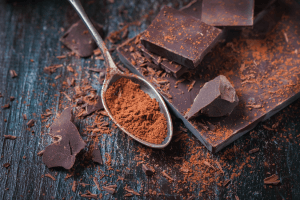
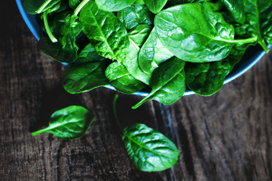
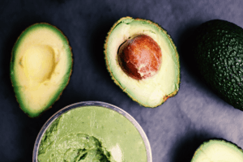
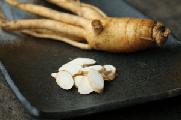
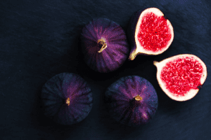
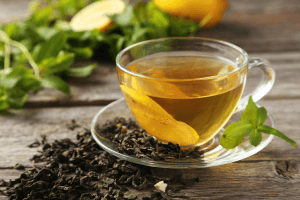

Sponsored Article is ROK's official account that publishes sponsored articles from advertisers. If you are interested hiring a sponsored article for your site, product, or service, visit our advertising page.


The following article was sponsored by Henry Tran
As a guy, you know that getting in the mood (and staying in the mood) will take more than playing Marvin Gaye’s “Let’s Get It On” on repeat from your bedside bluetooth speakers.
But just as certain songs are famed for flipping your sexy time switch on, there are also certain foods that are known to improve your sexual desire and even boost your bedroom performance.
The good news is that you don’t need to seek out any foreign foods from faraway lands; these foods can all be found at your local grocery store and will all but ensure you a successful session between the sheets.
To get a head start, I created a complete video guide to naturally boosting testosterone and libido through nutrition that explains everything. If you want to skip ahead to the video guide now, click the link below:
VIDEO: How To Boost Libido With Food

Every time you eat dark chocolate, your brain levels up the release of serotonin and dopamine (your feel good hormones). Both mood boosters contribute to lowering your stress levels and increasing feelings of happiness and affection – The perfect conditions for sparking a little action. More so, cocoa has also been shown to increase blood flow through the arteries and relax blood vessels allowing for an easier lift off for your lap rocket.

Eating spinach puts you in the mood by increasing blood flow to the lands below your equator (er, belt). More blood flow forces blood to the extremities, which, like the little blue pill, can increase arousal and make sex more pleasurable. But it’s not just a bonus for you – this also works for her. While men will find that erections come more naturally, women will also find it easier to have full blown orgasms.

Avocados are a killer source of monounsaturated fats which are known to contribute to increasing testosterone production – the holy grail to a robust libido. Along with their T-boosting benefits, avocados also offer heart-health perks. Anything that helps your heart and circulation is also critical for a healthy sex life. In fact, men with heart disease are twice as likely to have erectile dysfunction because both conditions can result from artery damage.

Researchers found that those who took a ginseng supplement significantly upped their libido in a month, and 68 percent also said their overall sex life improved dramatically. Try a ginseng tea but be sure to find one that is natural, and free from added sugars that will cause you to store belly fat – which is the most powerful libido killer known to man.

Figs are considered excellent stimulants of fertility and are also known to enhance the secretion of pheromones. Pheromones are airborne compounds that send signals about your mood and your sexual attraction to others – so next time you’re looking to get jiggy with it, be sure to get figgy first.

Green tea is rich in compounds called catechins which do a few things for your sex life. First, they are known to boost sexual desire by promoting blood flow to your nether regions. They also trigger the release of nitric oxide – increasing the size of your blood vessels… And with more blood, comes more erections. Last but not least, catechins have also been shown to torch belly fat and rev up the liver’s ability to turn fat into energy. That means that you won’t just be harder, but you’ll also be leaner – a winning combination for a libido layup if you ask me.
So there you have it – the top 6 natural libido boosting foods. If you’re seeking a full on libido reboot, then you need to check out the first ever meal plan designed to up a man’s testosterone and supercharge sex drive.
The virtual guide to increasing your test couldn’t be easier – just click and watch the video demonstration below now: